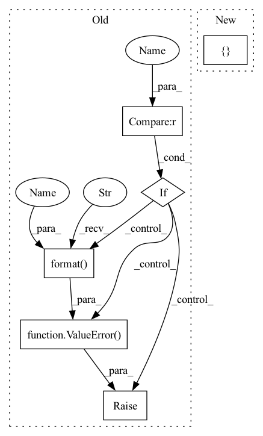

Pattern ID :1858

Before Change
loss_mask=dict(
type="CrossEntropyLoss", use_mask=True, loss_weight=1.0)):
super(FCNMaskHead, self).__init__()
if upsample_method not in [None, "deconv", "nearest", "bilinear"]:
raise ValueError(
"Invalid upsample method {}, accepted methods "
"are "deconv", "nearest", "bilinear"".format(upsample_method))
self.num_convs = num_convs
// WARN: roi_feat_size is reserved and not used
self.roi_feat_size = _pair(roi_feat_size)
self.in_channels = in_channels
After Change
type="CrossEntropyLoss", use_mask=True, loss_weight=1.0)):
super(FCNMaskHead, self).__init__()
self.upsample_cfg = upsample_cfg.copy()
if self.upsample_cfg["type"] not in [
None, "deconv", "nearest", "bilinear", "carafe"
]:
raise ValueError(
"Invalid upsample method {}, accepted methods "
"are "deconv", "nearest", "bilinear", "carafe"".format(
In pattern: SUPERPATTERN
Frequency: 3
Non-data size: 6
Instances
Fragment ID: 4949591
Project Name: saic-vul/iterdet
Commit Name: b5431092505f7dcd7de616c8a79eba4d2532fbc8
Time: 2020-02-21
Author: 1155098160@link.cuhk.edu.hk
File Name: mmdet/models/mask_heads/fcn_mask_head.py
M Class Name: FCNMaskHead
N Class Name: FCNMaskHead
M Method Name: __init__(12)
N Method Name: __init__(13)
M Parent Class: nn.Module
N Parent Class: nn.Module
M File Name: mmdet/models/mask_heads/fcn_mask_head.py
N File Name: mmdet/models/mask_heads/fcn_mask_head.py
M Start Line: 23
M End Line: 76
N Start Line: 26
N End Line: 90
'>
Before Change
end_net.append(nn.Conv1d(hidden_channels, out_channels, kernel_size=1, stride=1, bias=False))
if output_nonlinear is not None:
if output_nonlinear == "tanh":
end_net.append(nn.Tanh())
elif output_nonlinear == "softmax":
end_net.append(nn.Softmax(dim=1))
else:
raise ValueError("Not support {}".format(output_nonlinear))
self.end_net = nn.Sequential(*end_net)
def forward(self, input, enc_h=None):
After Change
if output_nonlinear is not None:
if output_nonlinear == "softmax":
kwargs = {
"dim": 1
}
else:
kwargs = {}
module = choose_nonlinear(output_nonlinear, **kwargs)
'>
Fragment ID: 4949590
Project Name: tky823/dnn-based_source_separation
Commit Name: 10282099ca12b94e9b9870841d4de0252506baab
Time: 2021-12-05
Author: delta9guitar97@gmail.com
File Name: src/models/wavenet.py
M Class Name: WaveNet
N Class Name: WaveNet
M Method Name: __init__(19)
N Method Name: __init__(19)
M Parent Class: nn.Module
N Parent Class: nn.Module
M File Name: src/models/wavenet.py
N File Name: src/models/wavenet.py
M Start Line: 24
M End Line: 39
N Start Line: 33
N End Line: 41
'>
Before Change
loss_mask=dict(
type="CrossEntropyLoss", use_mask=True, loss_weight=1.0)):
super(FCNMaskHead, self).__init__()
if upsample_method not in [None, "deconv", "nearest", "bilinear"]:
raise ValueError(
"Invalid upsample method {}, accepted methods "
"are "deconv", "nearest", "bilinear"".format(upsample_method))
self.num_convs = num_convs
// WARN: roi_feat_size is reserved and not used
self.roi_feat_size = _pair(roi_feat_size)
self.in_channels = in_channels
After Change
type="CrossEntropyLoss", use_mask=True, loss_weight=1.0)):
super(FCNMaskHead, self).__init__()
self.upsample_cfg = upsample_cfg.copy()
if self.upsample_cfg["type"] not in [
None, "deconv", "nearest", "bilinear", "carafe"
]:
raise ValueError(
"Invalid upsample method {}, accepted methods "
"are "deconv", "nearest", "bilinear", "carafe"".format(
'>
Fragment ID: 4949588
Project Name: shinya7y/universenet
Commit Name: b5431092505f7dcd7de616c8a79eba4d2532fbc8
Time: 2020-02-21
Author: 1155098160@link.cuhk.edu.hk
File Name: mmdet/models/mask_heads/fcn_mask_head.py
M Class Name: FCNMaskHead
N Class Name: FCNMaskHead
M Method Name: __init__(12)
N Method Name: __init__(13)
M Parent Class: nn.Module
N Parent Class: nn.Module
M File Name: mmdet/models/mask_heads/fcn_mask_head.py
N File Name: mmdet/models/mask_heads/fcn_mask_head.py
M Start Line: 23
M End Line: 76
N Start Line: 26
N End Line: 90